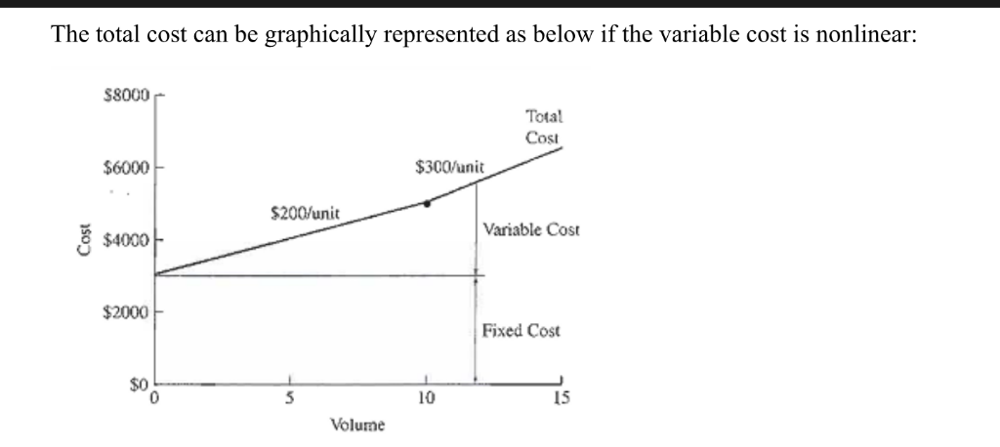
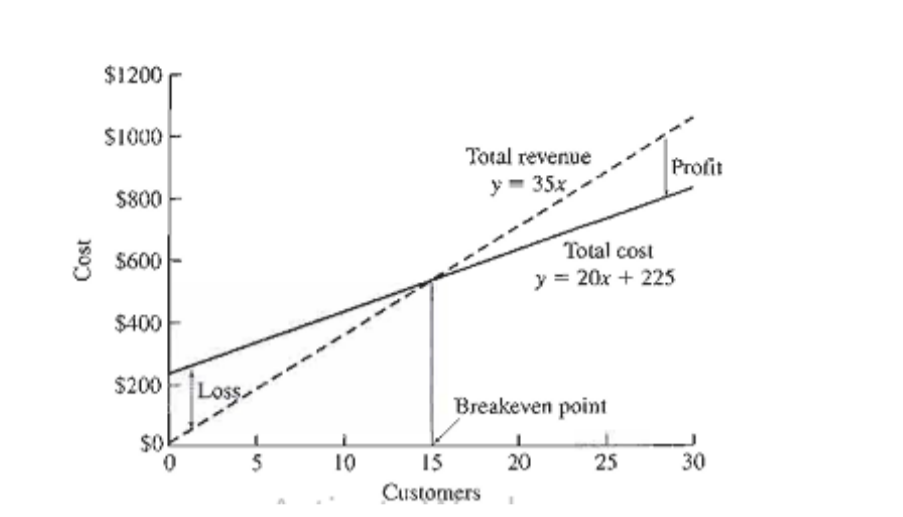
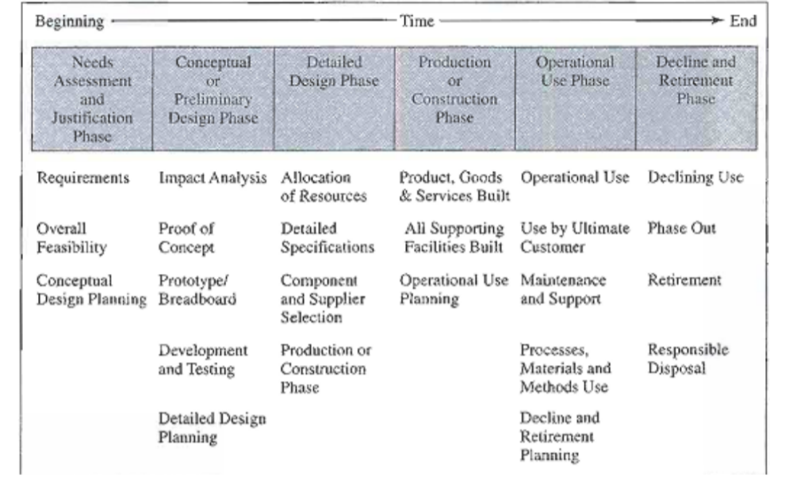

Scope of Module 1
- Distinguish between simple and complex problems
- Discuss the role and purpose of engineering economic analysis
- Describe and give examples of the nine steps in the economic decision making process
- Select appropriate economic criteria for use with different type of economic problems
- Solve simple problems associated with engineering decision-making.
Questions to consider
- How did the cost and weight of fireproofing material affect the engineers' decision making when the twin towers were being constructed?
- How much should a builder be expected to spend on improved fireproofing, given the unlikelihood of an attack on the scale of 9/11?
- How have the perception of risk changed since the 9/11 attacks, how might this affect future building design decision?
Role of engineering economic analysis
Engineering economic analysis is most suitable if the problem is:
- Enough important to give it a serious thought and effort
- Cannot be solved in head and a careful analysis requires that the problem should be organized along with various consequences.
- Having an economic aspect so decision – making is important.
Economic Decision Making
Decision-making is the broad topic because it deals with aspect of everyday human existence. The main focus is to develop the tools to properly analyze and solve the economic problems that are commonly faced by engineers. Even complex situations can be broken down into components to form a sensible solution. The understanding of decision – making process is important because the tools of decision – making is useful for obtaining realistic comparisons between alternatives so that I can make better decision.
Engineering economic analysis focuses on cost, revenues and benefits that occur at different times. Most of the things that engineers design calls for spending money in the design and building stages and after completion revenues or benefits occur – usually for years. Thus the economic analysis of cost, benefits and revenues occurring over time is called engineering economics.
Element in decision – making
- To have a decision – making situation there must be at-least two alternatives available. If only one course of action is available, there can be no decision – making because there is nothing to decide.
- The decision should be rational. (Out of five horses running on a race track if someone chooses its betting horse by closing eyes and pointing finger on a number then it is not rational)
Rational decision – making
Rational decision making contains nine essential elements. Although the sequence can vary and can be repeated, but all the elements are present in all rational decision. The elements are:
Problems on Decision-making
A concrete aggregate mix is required to contain 31% sand by volume for proper batching. One source of material, which has 25% sand and 75% coarse aggregate and sells for Rs. 270/m³. Another source which has 40% sand and 60% course aggregates, sells for Rs. 396/m³. Determine the least cost per cubic meter of blended aggregates.
A machine part is manufactured at a unit cost of Rs. 40 for material and Rs 15 for direct labor. An investment of Rs. 500,000 in tooling is required. The order requires 3 million pieces. Halfway through the order, a new method of manufacture can be put into effect that will reduce the unit cost to Rs. 34 for material and Rs. 10 for direct labor – but it will require Rs. 100,000 for additional tooling. This tooling will not be useful for fortune orders. Once costs are allocated at 2.5 times the direct labor cost. What if anything, should be done?
In the design of a cold-storage warehouse, the specification call for a minimum heat transfer through the warehouse walls of 30,000 joules/m³, when there us a 30 ºC temperature between the inside and the outside surface of the insulation. The two insulation materials considered as follows:
| Insulation Material | Cost per cubic meter | Conductivity (J-m/m² – C - hr) |
|---|---|---|
| Rock wool | $12.50 | 140 |
| Foamed insulation | $14.00 | 110 |
The basic equation for heat conduction through a wall is

Part 2: Engineering Costs and Cost Estimating
This part defines fundamental cost concepts. The costs includes fixed and variable costs, marginal and average costs, sunk and opportunity costs, recurring and non-recurring costs, incremental cash cost, book costs and life-cycle costs. It part covers the various types of estimates and difficulties sometimes encountered. The models include unit factor, segmenting, cost indexes, power sizing, triangulation and learning curves. This part discusses estimating benefits and developing cash flow diagrams.
Engineering Costs
The total cost can be graphically represented as below if the variable cost is nonlinear:

An entrepreneur named Sheetal was considering the money making potential of chartering a bus to take people from his home-town to an event in a larger city. Sheetal planned to provide transportation tickets to the event, and refreshments on the bus for his customers. She gathered data and categorized the predicted expenses as either fixed or variable.
| Item | Fixed Cost (in Rs) | Item | Variable cost(in Rs) |
|---|---|---|---|
| Bus rental | 7200 | Event ticket | 1125/person |
| Gas expense | 6750 | Refreshment | 675/person |
| Other fuels | 1800 | ||
| Bus driver | 4500 |
Develop an expression of Sheetal’s total fixed and total variable cost for chartering this trip.
Sheetal developed an overall total cost equation for his business expenses. Now, she wants to evaluate the potential to make money from this chartered bus trip if she sets the price of each ticket at Rs. 2500
From this the above exercise we can derive the total cost and total revenue equations and these will be used to calculate the profit – loss breakeven chart.
This can be graphically represented as:

Cost Estimating (Continued)
A distributor of electric pump must decide what to do with a “lot” of old lecetric pumps purchased three years ago. Soon after the distributor purchased the lot, technology advances made the old pumps less desirable to customers. The pumps are becoming more obsolescent as they sit in inventory. The pricing manager has the following information:
| Distributor purchase price 3 years ago | Rs. 6,30,000 |
| Distributor storage cost to date | Rs. 90,000 |
| Distributor’s list price 3 years ago | Rs. 8,55,000 |
| Current list price of the same number of new pumps | Rs. 1,080,000 |
| Amount offered for the old pumps from a buyer 2 years ago | Rs. 4,50,000 |
| Current price the lot of old pumps would bring | Rs. 2,70,000 |
Looking at this, the pricing manager has concluded that the price should be set at Rs. 7,20,000. This is the money that the firm has “tied-up” in the lot of old pumps (6,30,000+90,000), and it was reasoned that the company should at least recover this cost. Furthermore, the pricing manager has argued that an Rs. 720000 price would be Rs. 1,35,000 less than the list price from 3 years ago, and it would be Rs.3,60,000 less than what a lot of new pumps would cost (Rs. 1,080,000 – Rs. 7,20,000). What would be your advice on price?
Nonrecurring costs occurs at irregular intervals and hence, it is difficult to plan for or anticipate. It includes emergency maintenance expenses, installing new machines, disposal or close-down cost.
In engineering economic analysis recurring costs are modeled as cash flows that occur at regular intervals (such as every year or every 5 year). Their magnitude can be estimated, and they can be estimated in the overall analysis. Nonrecurring cost can be handled easily if anticipation of timing and size can be predicted.
Philips is choosing between model A (a budget model) and model B (with more features and a higher purchase price). What incremental costs would Philip incur if he chose model B instead of less expensive model A?
| Cost Items | Model A (in $) | Model B (in $) |
|---|---|---|
| Purchase price | 10,000 | 17,500 |
| Installation cost | 3500 | 5000 |
| Annual maintenance cost | 2500 | 750 |
| Annual utility expenses | 1200 | 2000 |
| Disposal cost after useful life | 700 | 500 |
The typical life cycle of the product can be tabulated as:

Life cycle costing refers to the concept of designing products, goods and services with a full and explicit recognition of the associated costs over the various phrases of their life cycles. Two key concept in life-cycle costing are that ‘the later design changes are made, the higher the cost’, and that decisions made early in the life cycle tend to “lock in” cost that are incurred later. The downstream product (products created using raw materials from earlier production stages) changes are more costly and upstream changes (focus on raw material, design, foundational development) are easier (and less costly) to make.
When planner try to save money at an early design stage, the result is often a poor design, calling for change orders during construction and prototype development. These changes, in turn, are more costly than working out a better design would have been. The life cycle effects that engineers should consider at the design time include product costs for liability, production, material, testing and quality assurance and maintenance and warranty. Other life-cycle effects include product features based on customer input and product disposal effects on the environment. The engineers should consider all life cycle cost..
Unit I: Inflation and Price Change
Every engineering project involves cash flows distributed across several years. Because the purchasing power of money degrades over time, engineering economic analysis must explicitly account for price changes and inflation to maintain rigorous, unbiased investment comparisons.
1.1 Definition & Nature of Inflation
Because engineering capital expenditures frequently span 5 to 25 years, even modest annual inflation rates compound into major distortions. A rupee or dollar received in year 10 possesses substantially diminished purchasing capability compared to a base-year dollar.
1.2 Effects of Inflation on Engineering Projects
- Purchasing power depletion: Fixed monetary sums purchase diminishing volumes of physical capital and labor over time.
- Cost escalation: Estimates for materials, energy, and contracted labor escalate throughout the operational life.
- Illusory profitability: Revenues reported in then-current actual currency appear artificially inflated without delivering greater real wealth.
- Interest rate premia: Capital lenders increase nominal lending rates to compensate for the real purchasing power lost during loan durations.
- Distorted evaluations: Mixing constant-dollar figures with actual future cash flows skews net present worth rankings.
- Fixed-income erosion: Fixed contracts, amortized leases, or predetermined annuities undergo continuous real decay.
1.3 Root Causes of Inflation
- Demand-Pull Inflation: Aggregate demand for goods and services outpaces production capacity at current prices. Buyers bid prices upward.
- Cost-Push Inflation: Input costs (crude energy, baseline wages, raw commodities) rise abruptly, compelling producers to transmit higher costs forward.
- Monetary Inflation: The money supply expands at a rate exceeding the growth of real economic output, devaluing individual currency units.
1.4 Price Change Tracking with Indexes
A price index measures the relative price of a commodity, service, or composite basket relative to an arbitrary base period (normalized to 100).
Average Compound Annual Inflation Rate (f) = (I_t / I_0)^(1/n) − 1
Scenario A: A bag of cement costs ₹300 in the base year (t=0) and ₹390 five years later (t=5).
Price Index: I₅ = (390 / 300) × 100 = 130 (+30% price rise).
Scenario B: A general construction index climbs from 100 to 150 over 8 years.
Compound Rate: f = (150 / 100)^(1/8) − 1 = (1.50)^0.125 − 1 ≈ 5.199% per year.
1.5 Types of Index Numbers
- Price Index: Monitors unit price variance of a specific commodity or defined basket.
- Quantity Index: Measures physical volume produced or consumed, holding price constant.
- Consumer Price Index (CPI): Measures retail cost of a fixed household consumption bundle.
- Wholesale / Producer Price Index (WPI / PPI): Evaluates commercial prices at factory or wholesale stages.
1.6 Composite vs. Commodity Indexes
1.7 Cash Flow Conversions & Fisher Relation
Actual Dollars (then-current): The nominal amount changing hands in future period t.
Constant Dollars (real): Currency normalized to base-year purchasing power.
Constant $ = Actual $ / (1 + f)^n
Combined (Fisher) Relation: i = i' + f + (i' × f)
Where: i = nominal market interest rate, i' = real inflation-free rate, f = general inflation rate.
Part 1 (Purchasing Power): With annual inflation f = 6%, constant ₹1,00,000 required in 5 years translates to:
Actual $ = 1,00,000 × (1.06)⁵ = ₹1,33,823.
Part 2 (Fisher Combined Rate): If required real rate i' = 8% and expected inflation f = 5%:
i = 0.08 + 0.05 + (0.08 × 0.05) = 0.13 + 0.004 = 13.40%.
1.8 Cash Flows Inflating at Differential Rates
Individual line items (labor, electrical power, refined materials) rarely inflate synchronously. For rigorous economic evaluation, escalate each cash-flow line item with its specific escalation index before aggregating into total annual actual cash flows.
Unit II: Present Worth Analysis
Present Worth (PW) analysis reduces all prospective cash receipts and disbursements to an equivalent single lump sum at time zero (t=0), establishing a direct, objective basis to evaluate mutually exclusive engineering alternatives.
2.1 End-of-Year Convention
2.2 Viewpoints of Analysis
Every analysis must maintain an unwavering perspective:
- Total Investment Viewpoint (Conventional): Considers total project capital, irrespective of equity vs. debt financing. Debt service is treated separately.
- Borrowed Money Viewpoint (Investor's Equity): Considers only direct equity contributions as initial outlay; interest payments and principal amortization are included as annual cash outflows.
2.4 Inflation Discounting Consistency
| Cash Flow Type | Required Discount Rate | Analytical Validity |
|---|---|---|
| Actual Dollars (Then-current) | Nominal Market Rate (i) | Valid: Matches inflated cash flows with market inflation premia. |
| Constant Dollars (Base-year) | Real Rate (i') | Valid: Evaluates pure purchasing power against real productivity return. |
| Actual Dollars | Real Rate (i') | Invalid Error: Under-discounts, grossly overstating project viability. |
| Constant Dollars | Nominal Rate (i) | Invalid Error: Double-discounts for inflation, heavily penalizing viable projects. |
2.5 Effect of Income Taxes & Depreciation
Engineering evaluations must proceed on an after-tax cash flow (ATCF) basis:
Income Tax = Taxable Income × Tax Rate (t_c)
ATCF = (Revenues − Operating Expenses) × (1 − t_c) + (Depreciation × t_c)
Depreciation is non-cash but produces a vital tax shield: Depreciation × t_c.
2.6 Economic Decision Criteria
| Problem Constraint | Governing Economic Criterion |
|---|---|
| Fixed Input: Fixed capital / resources available | Maximize Present Worth of Benefits (PW_B) |
| Fixed Output: Mandated service level / deliverables | Minimize Present Worth of Costs (PW_C) |
| Neither Input nor Output Fixed | Maximize Net Present Worth: NPW = PW_B − PW_C (Subject to NPW ≥ 0) |
2.7 Present Worth Techniques & Machine Evaluation
Net Present Worth: PW = −P₀ + A × (P/A, i, n) + S × (1 + i)^(−n)
A production machine requires initial investment P₀ = ₹5,00,000, returns uniform net savings A = ₹1,50,000 annually for n = 5 years, with MARR i = 10%. Salvage value is negligible (S = 0).
Factor: (P/A, 10%, 5) = [(1.10)⁵ − 1] / [0.10 × (1.10)⁵] = 0.61051 / 0.161051 ≈ 3.79079.
PW = −5,00,000 + 1,50,000 × (3.79079) = −5,00,000 + 5,68,618 = +₹68,618.
Decision: PW > 0; project is economically justified.
2.8 Evaluating Multiple Alternatives & Capitalized Cost
Alternatives must be evaluated over identical study periods:
- Equal Lives: Directly compute and compare PW.
- Unequal Lives: Use Lowest Common Multiple (LCM) of asset lifetimes, or a fixed planning horizon with terminal salvage imputation.
- Perpetual Projects: Capitalized Cost analysis for infinite service durations.
A regional drainage culvert costs initial P₀ = ₹20,00,000 to construct and mandates annual recurring maintenance A = ₹1,00,000 in perpetuity. Nominal discount rate i = 8%.
Perpetual Endowment: A / i = 1,00,000 / 0.08 = ₹12,50,000.
Total Capitalized Cost: CC = 20,00,000 + 12,50,000 = ₹32,50,000.
Unit III: Uncertainty in Future Events
Every engineering estimate reflects projections into an unresolved future. Unit III establishes quantitative methods to describe, model, and optimize decisions under explicit uncertainty and risk.
3.1 Estimates & Sensitivity Ranges
- Optimistic (Best-case): Favorable cost and revenue conditions.
- Most-Likely (Mode): Highest subjective probability under normal operations.
- Pessimistic (Worst-case): Unfavorable macroeconomic or operational disruptions.
Example: Annual savings projected at ₹80,000 (pessimistic), ₹1,10,000 (most-likely), and ₹1,40,000 (optimistic) bounds the present worth distribution before undertaking stochastic modeling.
3.3 Probability & Joint Distributions
Probabilities represent outcome likelihoods satisfying Kolmogorov axioms: 0 ≤ P(E_j) ≤ 1 and Σ P(E_j) = 1.0.
If high market demand has P(A) = 0.40 and an independent raw material price hike has P(B) = 0.50, their simultaneous joint occurrence is: 0.40 × 0.50 = 0.20 (20%).
3.5 Expected Value (EV)
A manufacturing venture forecasts annual return across three states of nature:
- High Demand: X₁ = ₹2,00,000 with p₁ = 0.30
- Normal Demand: X₂ = ₹3,00,000 with p₂ = 0.50
- Low Demand: X₃ = ₹1,00,000 with p₃ = 0.20
3.6 Economic Decision Trees & Dynamic Rollback
Decision trees visually structure multi-stage sequential decisions under uncertainty. Two fundamental nodes govern the topology:
- Decision Node (Square □): Points where management exerts control. Evaluated by choosing the branch with maximal expected value.
- Chance Node (Circle ○): Points subject to stochastic states of nature. Evaluated via expected value roll-back: EV = Σ (p_k × Payoff_k).
Adjust the branch probabilities and outcome payoffs to watch the dynamic backward-induction rollback re-evaluate optimal policy in real time.
3.7 Risk vs. Return & Monte Carlo Simulation
Risk vs. Return: Projects exhibiting wide probability dispersions mandate higher Minimum Attractive Rates of Return (MARR) to compensate investors for capital risk.
Monte Carlo Simulation: When multiple stochastic variables (unit demand, inflation, energy tariffs) interact non-linearly, analysts sample random variates across thousands of simulated project life cycles to generate complete continuous Present Worth probability density curves.
3.10 Real Options in Capital Budgeting
Unlike passive financial models, physical projects offer managerial flexibility to alter decisions over time as uncertainty resolves:
- Option to Defer: Postpone initial capital commitment until market demand or technological feasibility solidifies (e.g., holding land lease without building).
- Option to Expand / Contract: Build scalable infrastructure capable of doubling capacity or down-scaling with market shifts.
- Option to Abandon: Liquidate physical assets for salvage if revenues collapse below operating threshold, bounding downside losses.
- Option to Switch: Design dual-fuel generation plants or flexible manufacturing tooling to alternate feedstocks as spot prices shift.
Section 9: Time Value of Money & Interest Formulas
The purchasing power of money at a particular time is designated as the Time Value of Money (TVM). Capital received at a prospective future date inherently possesses lower real present value than an identical nominal sum held today.
Why Money Possesses Greater Value Today
- Liquidity & Investment Earning Power: Capital held immediately can be deployed productively into income-generating opportunities or interest-bearing assets to earn compounded returns.
- Consumption Preference & Risk Aversion: Individuals generally prefer present consumption over deferred consumption because the future is inherently contingent, uncertain, and exposed to risk.
- Productive Employment of Capital: Physical capital and machinery produce positive physical marginal output when combined with labor and materials.
- Purchasing Power Inflation: During periods of general price inflation, a rupee or dollar today commands greater command over real physical commodities than the same nominal currency unit one year later.
Simple Interest vs. Compound Interest
I = P × n × i | F = P × (1 + n × i)
F = P × (1 + i)^n
Standard Factor Notation
- P: Present principal sum or equivalent present worth at time zero (t=0).
- F: Future lump sum at the end of period n.
- A: Equal, uniform payment occurring at the end of every interest period for n periods.
- G: Uniform arithmetic gradient amount added or subtracted period-after-period to/from base payment.
- i: Effective interest rate per interest period.
- n: Number of compounding interest periods.
1. Single-Payment Compound Amount (F/P Factor)
Finds the future sum F resulting from initial outlay P after n periods at compounding rate i.
F = P × (F/P, i, n)
A person deposits initial sum P = ₹20,000 at interest rate i = 18% compounded annually for n = 10 years. Find maturity value F.
F = 20,000 × (1 + 0.18)¹⁰ = 20,000 × (1.18)¹⁰ = 20,000 × 5.2338356 = ₹1,04,676.71.
2. Single-Payment Present Worth Amount (P/F Factor)
Finds the present worth P required now to realize future sum F after n periods at discount rate i.
P = F × (P/F, i, n)
A parent wishes to provide a future education fund F = ₹1,00,000 after n = 10 years. The bank provides i = 15% annual compounding interest. Determine deposit P required today.
P = 1,00,000 × (1 + 0.15)⁻¹⁰ = 1,00,000 × 0.2471847 = ₹24,718.47.
3. Equal-Payment Series Compound Amount (F/A Factor)
Evaluates future value F accumulated by an annuity series of n equal end-of-period payments A.
F = A × (F/A, i, n)
A person aged 35 invests A = ₹10,000 at the conclusion of each year for n = 25 years until age 60. Bank returns i = 20% annual compound interest. Find total maturity value.
Factor: (F/A, 20%, 25) = [(1.20)²⁵ − 1] / 0.20 = [95.396216 − 1] / 0.20 = 471.98108.
F = 10,000 × 471.98108 = ₹47,19,810.80.
4. Equal-Payment Series Sinking Fund (A/F Factor)
Determines periodic contribution A required to accumulate predetermined future target F over n periods.
A = F × (A/F, i, n)
A manufacturing plant requires facility replacement after n = 15 years costing F = ₹5,00,000. Sinking fund yields i = 18% annual compounding. Determine annual deposit A.
Factor: (A/F, 18%, 15) = 0.18 / [(1.18)¹⁵ − 1] = 0.18 / [11.973748 − 1] = 0.01640277.
A = 5,00,000 × 0.01640277 = ₹8,201.39 per year.
5. Equal-Payment Series Present Worth (P/A Factor)
Determines lump-sum present worth P equivalent to uniform annuity receipts A across n periods at rate i.
P = A × (P/A, i, n)
A corporation commits an annual welfare disbursement A = ₹10,00,000 for n = 20 years. Capital reserve fund compounds at i = 15% annually. Find single present deposit P needed now.
Factor: (P/A, 15%, 20) = [(1.15)²⁰ − 1] / [0.15 × (1.15)²⁰] = 15.366537 / 2.4549806 = 6.259331.
P = 10,00,000 × 6.259331 = ₹62,59,331.45.
6. Equal-Payment Series Capital Recovery (A/P Factor)
Computes periodic recovery installment A required to amortize initial loan or capital investment P over n periods.
A = P × (A/P, i, n)
A bank finances machinery purchase with loan P = ₹10,00,000 at interest i = 18% compounded annually, amortized over n = 15 equal annual installments. Find installment A.
Factor: (A/P, 18%, 15) = [0.18 × (1.18)¹⁵] / [(1.18)¹⁵ − 1] = 2.155275 / 10.973748 = 0.1964028.
A = 10,00,000 × 0.1964028 = ₹1,96,402.77 per year.
7. Uniform Gradient Series Factors (P/G & A/G)
When operational costs (e.g. maintenance, repair) increase or decrease by a constant amount G each interest period, the cash flows form an arithmetic gradient series.
(P/G, i, n) = [ ((1 + i)^n − i × n − 1) / (i² × (1 + i)^n) ]
Gradient Equivalent Uniform Series Factor:
(A/G, i, n) = (1 / i) − [ n / ((1 + i)^n − 1) ]
Total Equivalent Uniform Series: A_total = A₁ ± G × (A/G, i, n)
A machine maintenance schedule mandates ₹200 at end of year 1, ₹250 at end of year 2, ₹300 at year 3, and ₹350 at year 4. Base payment A₁ = ₹200, constant gradient G = ₹50, n = 4 periods, discount rate i = 10%.
Factor (A/G, 10%, 4) = (1 / 0.10) − [ 4 / ((1.10)⁴ − 1) ] = 10 − [ 4 / 0.4641 ] = 10 − 8.6188 = 1.3812.
Equivalent Uniform Annual Cost: A_total = 200 + (50 × 1.3812) = 200 + 69.06 = ₹269.06 per year.
Present Worth: P_total = A_total × (P/A, 10%, 4) = 269.06 × 3.16987 = ₹852.89.
8. Ordinary Annuity vs. Annuity Due
Annuity Due: Payments are made at the beginning of each period (e.g. lease rentals, advance insurance premiums).
FW(Annuity Due) = A × (F/A, i, n) × (1 + i)
9. Debt Repayment & Full Loan Amortization Schedule
Debt repayment entails discharging credit obligations through contracted installments consisting of two distinct components:
- Interest Payment (I_t): Compensation to lender for capital utilization: I_t = Beginning Balance_{t-1} × i.
- Principal Amortization (PR_t): Actual retirement of original borrowed principal: PR_t = Annual Installment (A) − I_t.
- Ending Balance: Balance_t = Balance_{t-1} − PR_t.
Enter loan parameters to dynamically generate the complete period-by-period amortization breakdown. 100% rigorous math, zero hardcoding.
10. Nominal vs. Effective Interest Rate
Effective Interest Rate (EIR / i_e): Actual true economic annual yield factoring within-year compounding frequency m.
Continuous Compounding Limit: i_e = e^r − 1
A bank advertises a nominal loan rate r = 12% per annum, compounded monthly (m = 12 periods/year).
Period Interest Rate: i_per = 12% / 12 = 1.0% per month.
Effective Annual Rate: i_e = (1 + 0.12 / 12)¹² − 1 = (1.01)¹² − 1 = 1.126825 − 1 = 12.6825% p.a.
Section 10: Exam Practice & Model Solutions
Rigorous, curriculum-aligned model answers derived directly from the analytical frameworks established across Modules 1 and 2. Click Show Model Solution on each card to expand complete step-by-step reasoning, mathematical formulations, and interactive calculation widgets.
Module 1 Review Questions & Solutions
Question: State any four elements of the rational decision-making process.
Any four of the nine foundational steps detailed in Section 2: Rational Decision-Making:
- Recognize the Problem: Identify operational deficiencies, technological obsolescence, or unmet capacity requirements.
- Define Goal / Objective: Formulate specific, unambiguous performance targets and criteria to satisfy.
- Assemble Relevant Data: Gather verified cost-accounting figures, technological parameters, market rates, and engineering estimates while filtering irrelevant historical artifacts.
- Identify Feasible Alternatives: Develop practical, actionable solution pathways—explicitly including the baseline do-nothing alternative.
(Alternative valid elements: Select Criteria, Construct Model, Predict Outcomes, Choose Best Alternative, Audit Results).
Question: Explain the difference between fixed cost and variable cost, with one example of each.
- Fixed Cost: Expenditures that remain constant, invariant, and unchanging regardless of the level of operational activity or production volume within a relevant range.
Example: Factory building lease, tooling investments (e.g. ₹5,00,000 tooling in Problem 2), property taxes, and depreciation. - Variable Cost: Expenditures that fluctuate directly and proportionately with the level of output or operational throughput.
Example: Direct manufacturing labor, raw materials consumed per unit, and electric power for production machinery.
Question: Explain why sunk cost is disregarded in engineering economic analysis.
Definition: A sunk cost is an expenditure that has already occurred in the past as the outcome of a prior decision and cannot be altered, recovered, or undone by any present or future choice.
Analytical Rationale:
- Engineering economic analysis focuses strictly on future prospective cash flows and incremental differences between competing forward-looking alternatives.
- Because a sunk outlay exists identically across all available future options (including doing nothing), it cancels out in differential cash flow comparisons.
- Factoring in sunk costs produces the irrational sunk cost fallacy, leading managers to misallocate fresh capital into unviable assets simply to "recover" historical, unalterable losses.
Problem: Total cost of producing 55 units is Rs. 2,200 and of producing 56 units is Rs. 2,250. Calculate the marginal cost of the 56th unit and the average cost at 56 units.
Average Cost: AC = TC_Q / Q
1. Marginal Cost of the 56th unit:
MC₅₆ = (2,250 − 2,200) / (56 − 55) = 50 / 1 = Rs. 50.00.
2. Average Cost at 56 units:
AC₅₆ = 2,250 / 56 ≈ Rs. 40.18 per unit (exactly 40.17857 Rs./unit).
Economic Insight: Because MC₅₆ (Rs. 50) exceeds previous average cost AC₅₅ (2,200 / 55 = Rs. 40), producing the 56th unit exerts upward pressure on average cost.
Question: Explain the learning curve and why it matters in short production runs.
Definition: The learning curve models the empirical phenomenon whereby input labor hours and unit costs decline at a predictable geometric rate each time cumulative production volume doubles:
where Y_x = labor required for x-th unit, K = labor for first unit, b = learning parameter.
Why It Matters in Short Production Runs:
- In short production runs, manufacturing never reaches the steady-state, plateaued region of the learning curve. The entire batch is produced along the initial, steep learning phase where workers and supervisors are actively adapting to tooling, fixtures, and tolerances.
- Initial units consume dramatically higher labor and overhead than long-run averages. Assuming steady-state labor standards severely understates production costs, causing catastrophic contract bidding deficits.
Problem: A distributor bought a lot of electric pumps three years ago for Rs. 6,30,000 and has spent Rs. 90,000 on storage so far. The pumps are now obsolete, and the lot would fetch only Rs. 2,70,000 today. The pricing manager wants to price the lot at Rs. 7,20,000 to recover the money tied up. Evaluate this reasoning using sunk cost and opportunity cost, and advise on the price.
1. Evaluation of Pricing Manager's Reasoning:
- Sunk Cost Fallacy: The initial purchase price of Rs. 6,30,000 and accumulated storage fees of Rs. 90,000 (totaling Rs. 7,20,000) are past, unrecoverable historical outlays (sunk costs). Prospective buyers in an open market determine value based solely on present functional utility and competitive modern substitutes, not the distributor's past accounting costs. Pricing at Rs. 7,20,000 will result in zero sales while continuing to burn ongoing monthly storage fees.
- Opportunity Cost: The true economic value of retaining the pumps is the benefit forgone by not selling them today, which is the immediate market-clearing sum of Rs. 2,70,000. Retaining the inventory incurs an opportunity cost equal to the investment return that Rs. 2,70,000 could earn if deployed elsewhere at the firm's MARR.
2. Professional Advice on Price:
Accept the prevailing market offer of Rs. 2,70,000 (or best competitive bid near it) immediately. Liquidating now stems continuous storage overhead leakage and frees up Rs. 2,70,000 of productive working capital.
Module 2 Review Questions & Solutions
Question: State any four categories of cash flow in an engineering project.
- Initial Capital Expenditure (First Cost / Outlay, P₀): Capital spent at time zero on land acquisition, civil construction, machinery procurement, and commissioning.
- Annual Operating and Maintenance (O&M) Costs: Recurring expenditures required during operational life for direct labor, energy, consumable materials, and routine servicing.
- Periodic Revenues / Cost Savings: Inflows generated from product sales, user utility tariffs, or annual operational cost reductions.
- Terminal Salvage Value (S): Net cash proceeds recovered at the end of the project's functional life through asset liquidation, resale, or material recycling.
(Additional valid categories: Overhauls/Major Replacements, Corporate Income Taxes & Depreciation Tax Shields).
Question: Define the Internal Rate of Return (IRR) and state the condition under which a project is accepted.
Definition: The Internal Rate of Return (IRR or i*) is the break-even discount rate that equates the present worth of cash inflows (benefits) to the present worth of cash outflows (costs), reducing the Net Present Worth (NPW) of the project to exactly zero:
Project Acceptance Criterion:
- For an independent project, accept if and only if IRR ≥ MARR (Minimum Attractive Rate of Return). Reject if IRR < MARR.
- (For mutually exclusive alternatives, select based on incremental rate of return: ΔIRR ≥ MARR).
Question: Explain what is meant by equivalence of cash flows.
Concept of Economic Equivalence:
- Cash flow equivalence means that distinct sums of money occurring at different points in time have identical economic purchasing value to an investor when evaluated at a designated compound interest rate (i).
- Two cash flows are equivalent if an individual is entirely indifferent between receiving cash flow A today or cash flow B at a specified future date.
- Example: Under a 10% interest rate, Rs. 100 today is economically equivalent to Rs. 110 one year from now, and Rs. 121 two years from now, because depositing Rs. 100 at 10% compound interest mathematically yields exactly those future sums.
Problem: A firm has fixed costs of Rs. 3,60,000, a selling price of Rs. 150 per unit, and a variable cost of Rs. 90 per unit. Calculate the break-even quantity.
Break-Even Quantity: Q_BE = Fixed Costs (FC) / (P − v)
Step-by-Step Solution:
- Unit Contribution Margin = Rs. 150 − Rs. 90 = Rs. 60 per unit.
- Break-Even Quantity: Q_BE = 3,60,000 / 60 = 6,000 units.
Verification:
Total Revenue = 6,000 × Rs. 150 = Rs. 9,00,000.
Total Cost = Rs. 3,60,000 + (6,000 × Rs. 90) = Rs. 3,60,000 + Rs. 5,40,000 = Rs. 9,00,000.
Net Profit = Total Revenue − Total Cost = Rs. 0 (Exact Break-Even Point Verified).
Question: Explain any two drawbacks of benefit–cost analysis for public goods.
- Difficulty in Monetizing Non-Market Intangibles: Public infrastructure delivers societal impacts (e.g. human lives saved, travel stress reduction, clean air, scenic preservation) that lack transparent market prices. Assigning shadow prices is subjective, contentious, and easily manipulated.
- Arbitrariness of the Social Discount Rate: Public projects span multiple decades or generations. Selecting a social discount rate is fundamentally normative: high rates penalize future generations by heavily discounting long-term environmental and safety benefits, while low rates justify capital-inefficient public overspending.
(Alternative valid drawback: Disregard for Income Distribution & Equity—B/C aggregates total monetary surplus irrespective of whether low-income citizens bear the disruption costs while affluent commuters reap the time savings).
Problem: A state government plans to build a bridge across a river so that vehicle users no longer take a long detour, saving travel time and fuel.
(a) Explain how the benefit–cost ratio would be used to decide whether the project is justified.
(b) Evaluate the limitations of relying on the benefit–cost ratio alone for this public project.
(a) Use of Benefit–Cost (B/C) Ratio for Justification:
- Quantify the present worth (or equivalent uniform annual worth) of all direct public benefits (B): fuel savings + monetary value of commuter travel time saved − user disbenefits.
- Quantify the government's total capital construction expenditure and maintenance outlays (C).
- Compute the Benefit–Cost Ratio:
B/C = PW(Public Benefits) / PW(Sponsor Costs)
- Decision Rule: If B/C ≥ 1.0 (or Net B − C ≥ 0), the bridge generates net economic welfare in excess of public expenditure and is economically justified. If B/C < 1.0, it is rejected.
(b) Limitations of Relying on B/C Ratio Alone:
- Subjectivity of Value of Time (VOT): Travel time savings form the dominant benefit component. Valuing an hour saved requires debatable assumptions about wage rates, trip purposes, and whether small individual time increments (e.g. 5 minutes) translate into real economic productivity.
- Induced Traffic & Secondary Congestion: The new bridge may induce additional vehicle trips, causing bottleneck congestion on feeder roads and increased regional carbon emissions not captured in static origin-destination models.
- Ecological & Aesthetic Disruption: River hydrology alteration, wetland damage during piling, and construction noise pollution cannot be fully encapsulated in a financial ratio.
- Distributional Equity: The bridge may displace local ferry operators and adjacent residents, concentrating costs on a vulnerable subgroup while spreading benefits to motorized commuters. A single B/C ratio hides these distributional inequalities.